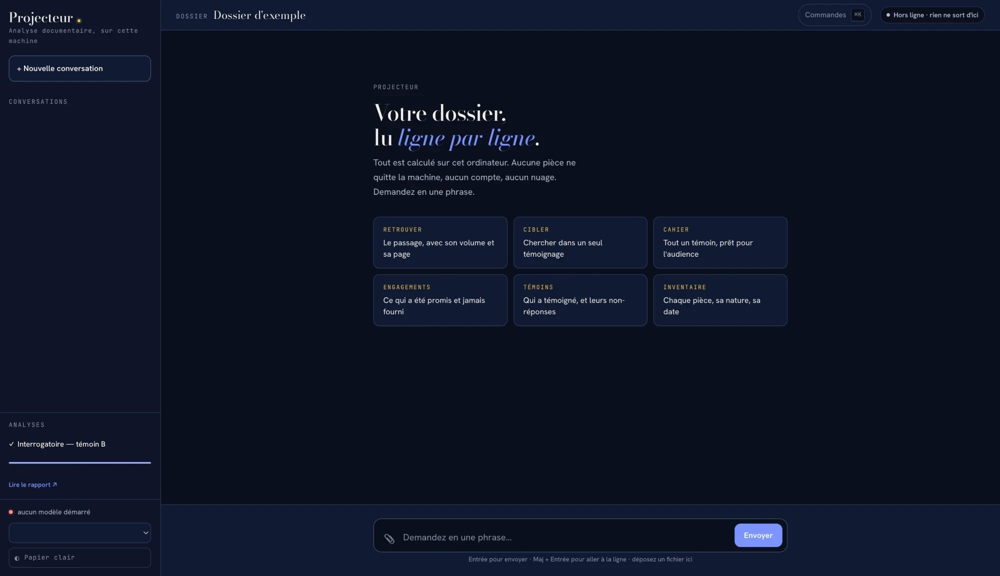

PDFImage.docx.eml.msg
Lecture directe
Le PDF, l'image, le .docx, le .eml et le .msg d'Outlook sont lus tels quels.
IA 100 % locale · Respect de la Loi 25 · Zéro hallucination
Lavoie&Maher lit toute la preuve d'un dossier, retrouve chaque détail avec son volume et sa page, et monte vos documents d'audience. Le tout sur vos serveurs.

Le logicielProjecteur, installé sur votre poste. Hors ligne : rien ne sort d'ici.
Chapitre IConfidentialité
Aucun document, aucune question, aucune transcription ne quitte votre cabinet.
Votre plus grand risque avec l'IA, c'est d'envoyer les renseignements personnels de vos clients sur les serveurs d'un tiers. Ici, c'est impossible : l'outil fonctionne entièrement sur l'infrastructure de votre cabinet, sans service infonuagique externe. Le secret professionnel reste là où il doit être.
Les modèles tournent sur vos serveurs et fonctionnent sans connexion Internet. Rien ne transite en ligne, même pas vos questions.
Aucune communication de renseignements personnels à un tiers ni à l'extérieur du Québec : le traitement reste sous votre contrôle.
Chapitre IIFaire entrer un dossier
L'outil lit tous les formats d'une divulgation et vous dit, avant de commencer, ce qu'elle contient et combien de temps prendra l'analyse.
La divulgation arrive rarement propre. L'outil lit directement le PDF, l'image, le .docx, le .eml et le .msg d'Outlook, et convertit le reste sur place (vieux .doc, .rtf, tableurs, iWork), sans dépendance externe.
Le PDF, l'image, le .docx, le .eml et le .msg d'Outlook sont lus tels quels.
Vieux .doc, .rtf, tableurs et fichiers iWork sont convertis sans aucune dépendance externe.
L'OCR tourne en local sur Qwen3-VL, retenu après un banc d'essai contre PaddleOCR, qui lisait « jμmvam » pour « janvier » sur des pages dégradées.
Ce qu'il y a dans le dossier, pièce par pièce, avec sa nature, sa date et son volume.
Avant de lancer l'analyse complète, l'outil dit combien de temps elle prendrait. Vous décidez ensuite.
Posez la question dans une langue, trouvez la preuve dans l'autre. Traductions de travail incluses.
Whisper transcrit en local et horodate chaque segment.
L'audio et la vidéo passent par Whisper, sur vos serveurs. L'horodatage sert de provenance : une piste qui ne cite pas un intervalle réel de l'enregistrement est rejetée par le code.
Piste proposée : « le témoin reconnaît le retard », citant 08:14:02 → 08:14:09.
L'enregistrement dure 07:42:00. Cet intervalle n'existe pas : la piste est écartée par le code.
Quatre modes de classement : date, nom, type ou taille. Et on peut toujours revenir en arrière.
Le classement met les pièces en ordre et les renomme selon le mode choisi. Il est réversible : defaire_classement remet les noms d'avant.
Chapitre IIIRetrouver
Chaque résultat mène à la page exacte du PDF d'origine.
Le lien vers la page s'affiche à l'écran seulement : les livrables remis au cabinet n'en contiennent jamais.
Cherche une information dans les pièces et rend le passage avec son volume et sa page.
Quelles pièces parlent de ça, et combien de fois. La question qui n'appelle pas de rédaction.
La même chose, à travers tous les dossiers en base d'un coup.
Les moments datés tels qu'énoncés dans la preuve, sans aucun modèle.
retrouvés pour « harcelement », même tapé sans accent.
Le singulier et le pluriel sont trouvés ensemble.
pour compter les mentions sur tout le dossier.
Démonstration · 12 pièces fictives · Accents et pluriels repliés · Aucune donnée réelle, aucun envoi.
Table des matières, cotes, objections et engagements, lus tels qu'imprimés.
En tête de chaque volume, le sténographe compose ces listes à la main. L'outil les lit sans modèle : rien ne peut être inventé.
Interrogatoire principal du témoin B3
Contre-interrogatoire89
Réinterrogatoire202
P-40 Rapport d'enquête interne47
D-7 Politique de prévention131
O-31 Pertinence97
O-32 Ouï-dire160
E-12 Produire le registre des plaintes118
Chapitre IVPréparer l'audience
Quatre documents d'audience, produits sans aucun modèle.
Ce sont les documents qu'un avocat assemble à la main avant une audience. Chaque ligne vient des index et des pages du dossier.
Réunit les volumes du témoin, ses phases, ses non-réponses chiffrées, et les cotes et objections de son témoignage.
| Rubrique | Témoin B | Où |
|---|---|---|
| Volumes | 3 volumes de transcription | Vol. 12 à 14 |
| Phases | Principal, contre-interrogatoire, réinterrogatoire | Vol. 12, p. 3 · p. 89 · p. 202 |
| Non-réponses | 6 au principal, 19 au contre | Détail page par page |
| Cotes | P-40 D-7 P-52 | Vol. 12, p. 47 · p. 131 · Vol. 13, p. 22 |
| Objections | 4 objections | Vol. 12, p. 97 · p. 160 · Vol. 13, p. 58 · p. 141 |
| Où | P-40 · Rapport d'enquête interne | Contexte |
|---|---|---|
| Vol. 12, p. 47 | Dépôt de la pièce, 14 pages | Interrogatoire principal, témoin B |
| Vol. 12, p. 52 | Questions sur les conclusions du rapport | Interrogatoire principal, témoin B |
| Vol. 13, p. 8 | Retour sur la date de l'enquête | Contre-interrogatoire, témoin B |
| Vol. 21, p. 310 | Le témoin dit ne pas avoir lu le rapport | Interrogatoire principal, témoin D |
| Engagement | Objet | Pris à | Statut |
|---|---|---|---|
| E-9 | Transmettre les courriels de mars | Vol. 11, p. 204 | Repris · Vol. 15, p. 4 |
| E-12 | Produire le registre des plaintes | Vol. 12, p. 118 | Jamais repris |
| E-13 | Fournir l'organigramme | Vol. 12, p. 176 | Repris · Vol. 16, p. 2 |
| E-17 | Vérifier les feuilles de temps | Vol. 14, p. 63 | Jamais repris |
| Cote | Discutée à | Contexte | Déclarée dans une liste |
|---|---|---|---|
| P-58 | Vol. 19, p. 233 | Courriel montré au témoin C | Aucune |
| D-14 | Vol. 27, p. 61 | Extrait de politique lu à voix haute | Aucune |
| P-61 | Vol. 40, p. 12 | Photo commentée par le témoin F | Aucune |
Les « je ne sais pas » et la longueur des réponses de chaque témoin, mesurés au principal et au contre.
temoins mesure le changement d'attitude entre les deux : le nombre de non-réponses et la longueur des réponses. Pour les non-réponses, le seuil est un test statistique, le z de deux proportions, et non un écart arbitraire.
repérés par le test statistique sur un dossier de 45 volumes.
d'écart pour le premier d'entre eux, entre le principal et le contre.
identifiés grâce aux en-têtes de phase imprimés.
Comment lire : un témoin qui répond « je ne sais pas » beaucoup plus souvent en contre-interrogatoire qu'au principal, et dont les réponses raccourcissent, change d'attitude. Le test statistique indique si la hausse est trop forte pour être due au hasard.
| Témoin | « Je ne sais pas » au principal | « Je ne sais pas » au contre | Hausse | Longueur des réponses principal → contre | Verdict |
|---|
Le témoin est identifié par l'en-tête imprimé en haut de chaque page de transcription, la seule source qui ne ment pas.
Sort ce qui permet d'attaquer un témoin : ses non-réponses chiffrées et les passages qui s'y prêtent, avec un penchant délibéré pour l'exclusion plutôt que pour le volume.
Les 45 jours de l'article 123 LNT, calculés au jour près.
C'est de l'arithmétique pure et répétable. Une date inconnue est traitée comme inconnue au lieu d'être devinée. S'y ajoutent la concomitance de l'article 123.4 et les seuils.
17 août 2026 + 45 jours
Exemple de calcul, à titre d'illustration.
Chapitre VFiabilité
L'outil ne répond qu'à partir de vos documents. Sans source, pas de réponse.
Les IA générales en ligne répondent de mémoire et peuvent inventer une citation, une date ou une pièce. Ici, tout fonctionne en local, sans Internet. Les index sont lus tels qu'imprimés, la chronologie et les assemblages sont produits sans modèle, et une piste audio qui ne cite pas un intervalle réel est rejetée par le code.
Mme Gagnon a-t-elle admis le retard par écrit ?
Oui. Dans un courriel du 5 avril 2021, Mme Gagnon reconnaît que « les travaux accusent un retard de trois semaines imputable à son équipe ».
Aucune pièce du dossier ne contient d'admission écrite du retard par Mme Gagnon. Le passage le plus proche va dans le sens contraire : elle attribue le retard « exclusivement à la pluie ».
Déposez la divulgation telle qu'elle arrive. L'inventaire dit ce qu'elle contient, l'estimation dit combien de temps prendra l'analyse.
question, mentions, partout et chronologie, avec le volume et la page de chaque passage.
Cahiers de contre-interrogatoire, dossiers de cotes, suivi des engagements et cotes jamais déclarées.
Une rencontre de 30 minutes avec l'équipe de Lavoie&Maher, sur un dossier fermé ou anonymisé de votre choix.